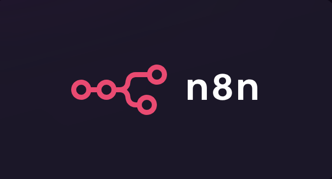

🧩 Getting Started with n8n — The Open-Source Playground for AI Workflows
Learn how to automate anything — from daily reports to AI-powered research agents — using n8n, the open-source orchestration tool that bridges automation and intelligence.
In a world full of no-code tools, n8n stands out as the open-source platform where automation meets intelligence. It’s not just another workflow builder — it’s a flexible orchestration system that lets you connect APIs, apps, and AI models using a simple visual interface.
You can automate repetitive tasks, experiment with AI agents, or even coordinate full-scale production systems — all without managing complex infrastructure.

🧠 What is n8n?
n8n (short for nodemation) combines “node” — for its modular Node.js foundation — and “mation” — for automation, its core purpose.
At its heart, n8n is a visual workflow automation tool. You drag nodes onto a canvas, connect them, and watch data flow through the system like logic made visible.
It’s open-source, extendable, and self-hostable — giving you full control over where and how your automations run.
Why It’s Different
🧩 No-code + code flexibility: Build visually, and drop in JavaScript or Python when you need custom logic.
🌐 Open-source & self-hostable: Use it on the cloud or run it privately for full data ownership.
⚡ AI-ready orchestration: Combine LLMs, APIs, and human steps in the same workflow.
In short: n8n is the bridge between AI’s intelligence and automation’s reliability.
⚙️ Orchestration Over Autonomy
While AI agents can reason and act on their own, they often lack structure — leading to unpredictable results. n8n solves that by providing orchestration: a controlled environment where you can define when things run, what happens if something fails, and when a human should step in.
Think of it as the nervous system for your AI — connecting intelligent “brains” (like OpenAI or Anthropic models) to real-world actions, APIs, and data pipelines.
With n8n, you can:
- Schedule or trigger tasks automatically
- Retry failed steps or log outcomes
- Pass structured data between AI models and APIs
- Include human review loops where needed
☁️ How to Host n8n
You can use n8n in three main ways:
- n8n Cloud (SaaS) — simplest way to start, hosted by n8n.io
- Self-host via Docker (recommended)
- VPS Hosting — for 24/7 uptime and full control (For example: Hostinger)
Once running, you’ll see the n8n Canvas, where you drag, drop, and connect nodes visually.
🧱 Core Building Blocks
Every n8n workflow is built from a few simple yet powerful components:
- Nodes: The core units of work — each node performs one action, like calling an API or sending an email.
- Edges: Connections that pass data from one node to another.
- Triggers: Nodes that start a workflow — such as a webhook, schedule, or manual input.
- Workflows: The overall blueprint tying everything together.
n8n includes nodes for almost every scenario:
- Trigger Nodes: Start processes automatically (e.g., schedule, webhook, or form submission).
- Action Nodes: Execute tasks like sending messages or creating records.
- AI Nodes: Run prompts, call chat models, or manage AI agents.
- Utility Nodes: Filter, merge, or transform data between steps.
- Code Nodes: Add JavaScript or Python logic when built-ins aren’t enough.
- Human-in-the-Loop Nodes: Pause the automation for approvals or input.
🔔 Trigger Nodes
Start workflows automatically:
- Schedule Trigger — run daily, weekly, hourly, etc.
- Webhook Trigger — start when an API call hits your endpoint
- Manual Trigger — start manually for testing
🤖 AI & Logic Nodes
- Model — send a prompt to an LLM (OpenAI, Anthropic, etc.)
- AI Agent — create an autonomous agent with memory and tools
- If / Switch / Merge — control logic and branches
- Loop / Sub-workflow — iterate or modularize logic
⚙️ Integration & Utility Nodes
- HTTP Request — call any API
- Google Sheets / Notion / Slack / Supabase / Airtable
- Code Node — run JavaScript/Python snippets
- Wait — manage flow timing
💬 Human-in-the-loop
Pause the workflow and wait for a human decision (approval or input) before continuing — a key pattern for AI-assisted automation.
💬 Hello n8n — Your First Agent Workflow
Let’s build your first automation to see n8n in action.
🔀 Workflow: Hello n8n
✨ Overview
This workflow demonstrates how a chat message can trigger an n8n workflow that talks to an AI model via OpenRouter and shows how prompt wording changes the response.
🚀 Key Features
- 💬 Chat Trigger — starts when you send a message in n8n chat.
- 🧠 AI Agent — the “brain” that follows simple communication rules.
- 🤖 OpenRouter Model — generates replies using the
deepseek/deepseek-chatmodel. - 🗂️ Memory — keeps short-term context for smoother, natural conversation flow.
🔄 How It Works
flowchart LR
A["💬 Chat Trigger"] --> B["🧠 AI Agent"]
B --> C["🤖 OpenRouter Model (deepseek/deepseek-chat)"]
B --> D["🗂️ Memory Buffer"]
C --> B
D --> B
- 💬 You send a message in n8n’s built-in Chat view.
- 🧠 The AI Agent applies short, clear response rules.
- 🤖 OpenRouter’s
deepseek/deepseek-chatmodel generates a reply. - 🗂️ Memory retains recent chat turns so it feels continuous.
🏛️ Architecture

⚙️ Setup
- 🗃️ Import
start-here.jsoninto your n8n Cloud or self-hosted workspace. - 🔑 Create an OpenRouter API key (free tier available) → https://openrouter.ai/keys
-
In n8n Credentials, add:
-
Credential Type:
OpenRouter API -
API Key: paste your key
-
🚀 Open the Chat view in n8n, and start typing to talk to your workflow.
🧩 Node Summary
| Node | Purpose | Notes |
|---|---|---|
| 💬 Chat Trigger | Starts when a message is received in n8n chat | No external trigger needed |
| 🧠 AI Agent | Applies demo rules: short, simple, clear | Highlights how prompt specificity changes answers |
| 🤖 OpenRouter Chat Model | Uses deepseek/deepseek-chat |
Fast, inexpensive, OpenAI-compatible |
| 🗂️ Simple Memory | Keeps short conversation history | Makes chat flow naturally |
📝 Try It Yourself
Type these messages in chat and compare how the AI adjusts:
Tell me about ParisTell me about Paris as a foodieI have eggs and rice
👉 Notice how the specificity of your prompt changes the depth and tone of the response. 👉 This is the foundation of understanding how prompt engineering affects output.
💡 Why OpenRouter?
OpenRouter is an open gateway that lets you access multiple AI models (like Anthropic, Mistral, DeepSeek, etc.) with a single API key.
Benefits:
- 🪙 Often free or cheaper per request
- 🔄 OpenAI-compatible API (drop-in replacement)
- 🧩 Works with n8n’s existing AI Agent node out of the box
✅ You’ve now built your first AI workflow using OpenRouter! From here, you can connect it to external APIs, RAG pipelines, or webhooks to power real applications.
Wrapping Up
n8n isn’t just another automation tool — it’s a bridge between AI and orchestration. It gives you: - A visual way to design and debug flows - Native support for LLMs and agents - Seamless integration with your entire app stack
Whether you’re automating reports, coordinating agents, or running production-grade RAG pipelines — n8n is your starting point for AI-native workflows.
Don’t forget to check out our Agentic AI System Design for PMs course on Maven if you are interested to be a part of something bigger.